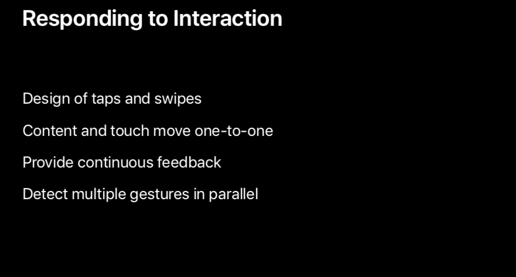

在使用 iPhone X 时，用户可以通过简单直观的手势顺畅地完成回到主屏幕、查看多任务、切换 app 等操作。之所以让用户感到界面如此流畅甚至与用户的思想融为一体的界面是如何设计的？这个 session 将会带领你学习如何设计直观、自然的手势、动画，从而让用户爱上你的 app。

Interfaces that extend our minds 延伸我们思想的界面
Aligning interfaces to the way we think and the way we move
- Respond to input instantly 对输入马上做出响应
Allow for constant redirection and interruption 允许持续的重新定向和打断
如果不允许重新定向和打断，那界面的操作将是线性的，你要先思考决定要干什么再通过特定的手势完成任务。
如果可以重新定向和打断，那「思考」和「手势操作」就可以同时进行，你可以将不同的单一的手势结合，组成新的手势。

Gesture in Parallel With Thought Summary
- Faster than thinking before doing 比「做之前做出思考」更快
- One gesture solves multiple problems 一个综合的手势可以解决多个不同的问题
- Helps with discovery 有助于探索新的手势，创造 1+1>2 的效果
- Allow you to layer gestures at the speed of thought 允许你跟上思考的速度做出对应的手势
Examples：
- Swipe home-screen pages /while/ going home
- Go to multitasking /while/ app is launching
- Close app /while/ launching app
- Interact with app /as/ it launches
Summary：这些事情看起来没有那么重要，但要想界面一直能够及时响应并理解你的意图这一点十分重要。要让用户感到界面是有生命的。这对于用户对界面的期待和理解以及使用的舒适度亦十分重要。
Maintain spatial consistency throughout movement 在移动的过程中保持空间一致性
- 保持在移动时的空间一致性、对称性，以符合物理世界物体运动的规律。例如一个页面自右向左滑入屏幕，那返回时应该自左向右滑出屏幕。
Hint in the direction of the gesture 在手势方向上的暗示/预测
- 物理世界中，人们会根据规律，对物体的形态、轨迹进行预测。例如控制中心的某个功能模块会随着手指的按下弹起并逐渐变大，直至弹出完整的功能页面。
Keep touch interfaces lightweight, but amplify their motion 保持触摸交互轻量化，但是放大它们的动作
- 小的投入产生大的、满意的效果；
- short interaction：通过 position（位置）、velocity（加速度）、speed（速度）、force（力）建立手势的动量/惯性文档，继而放大动作的效果，让其感觉就是自己的延伸。例如在滚动页面时，手指只在屏幕停留了一瞬间，但系统可以保持手指手势的能量和动量，移动合适、满意的距离。
Softly indicate boundaries 柔和地表明边界
- 例如在到达页面顶端和底端时，界面会柔和的提醒你，而不是戛然而止，像是碰到了一堵墙。
Soft transitions 柔和地过渡
- 从一个界面过渡到另一个界面、从一个动作过渡到另一个动作。例如在 iPad 上手指从屏幕底部向上轻扫划出 Dock，继续向上轻扫会进入多任务界面或回到首页。在这两者直接的过渡是平滑的，不是生硬的。
Design smooth frames of motion 设计平滑的动作运动效果
- 界面中物体的运动实际上是由多个帧组成，相邻的两个帧的视觉变动太大，就会造成视觉频闪，人的眼睛跟不上运动的速度。
- 在设计中重要的不是帧速率，而是帧内容。
- 几种运动效果：正常、动作模糊、动作拉伸

Work with behavior rather than animation 更多地考虑行为而不是动画
- 物理世界中的物体是一直处于动态的，并且会受到人的影响。
- 动画和操作更像是你和物体之间的对话，而非界面的描述。不要把静态的事物转变成动态的。
- 例如，在相册中滑动照片时的阻力较小，因为这个动作是轻量化的；而通过 Home Indicator 左右滑动切换 app 时需要用到的阻力就会更大，因为我们把这个动作看得更重。
Summary 总结：
- Instant response and constant redirection 立即地响应、连续地重定向
- Maintain spatial consistency 保持空间一致性
- Hint in the direction of the gesture 在手势方向上的预测
- Lightweight interactions, amplified output 轻量化交互，放大输出
- Soft boundaries and transitions 柔和的边界和过渡
- Design smooth, dynamic behavior 设计平滑、动态的行为
Designing with dynamic motion 动态动作的设计
在界面中常见的使用动态的一种形式是定时动画，只要敲击一下按钮，屏幕的控制权就完全交给了设计者。
在一个流畅的界面中，动画是动态的，屏幕的控制权是属于用户的，动画应该与互动同步进行。
Seamless motion 无缝动作
Characteristics of the physical world make great behaviors 物理世界的特征创造了完美的行为。
- Familiar, natural motion 熟悉的、自然的符合物理规律、人们认知的动作
- Maintains throw momentum 保持运动的动力
- Friction gracefully reduces speed 阻力优雅地使速度变慢
Imperceptibly comes to rest 难以觉察地趋向于静止，这种感觉不到结尾的运动会增强内容是不断运动的感觉。
当滚动一个页面到边缘时，页面会有一个弹性告诉用户用户已经到了页面的边缘，当用户放手时，这个弹性又会让页面渐渐回到其静息状态。
拿物理世界中最常见的弹簧来看，影响弹簧运动的几个因素：
- 质量+硬度（可合称为响应时间）：可以影响弹簧的惯性、运动时间和距离等
- 阻尼：可以影响弹簧的力的衰减等。
从简单开始，最基本的动作不需要弹簧的阻尼/过冲；一个有动量的手势需要有像弹簧一样的阻尼/过冲。例如在音乐 app 中，点击 tab bar 上方的正在播放以展开「正在播放」模态页面时，这个点击动作就没有动量，不需要阻尼，但当用手指向下轻扫关闭「正在播放」模态页面时就需要一点阻尼。
反弹可以用来暗示：例如在 iPhone X 的锁屏上有「手电筒」和「照相机」按钮，为了避免用户在无意间点击了这两个按钮，用户需要使用更加强烈的手势（3D Touch）才能打开相应的功能。但当一个不知道如何操作的用户轻点了这两个按钮，两个按钮会使用反弹的形式告诉用户界面正在响应用户的操作，这两个按钮是可以使用的，但还需要再用力一点。
Think beyond motion. 思考并不仅仅是动作。
- 在界面中，不仅仅可以通过动效来告诉用户内容是运动的，还可以通过声音、触觉、颜色等。
- 例如在一个 Data Picker 中，用户上下滑动日期，屏幕上有动画，扬声器中有声音，手机会有震动反馈，这更加让用户感受到内容的运动。
Crafting a character 构造一个特征
- 任何一个动作都不应该是独立的，而应该是置于整体考虑的，应该是在 app 中可重复的，用户可以轻易学会的；
- 例如手指向上滑动，使一个页面向上滚动时，用户也可以双击状态栏使页面回到顶部，这是无缝衔接的，这也应该是贯彻整个 app 的交互操作。
Understanding intent 理解意图
- 普通的按钮在点击后的发生的结果比较显而易见，且每个按钮与结果一般是一一对应的。但对于用户触发的手势来说，需要根据用户手势的动作、动量、时间等因素预测并理解用户的意图。
例如在 Facetime 中，默认情况下右下角的浮窗可以显示对方能看到的你的画面，用户可以通过手势将其移动到屏幕的四个角落的任意一个。当用户的手势触发时，就应该根据手势的动量等数据预测用户的意图，以确定最终的移动位置。
意图的预测与理解不仅适用于物体的移动，也适用于物体的旋转、改变大小或者几者之间的结合。
Summary 总结：
- Continuous behaviors, not timed animations 连续一致的行为，而不是定时动画；
- Draw inspiration from the physical world 从物理世界获取灵感
- Springs don’t need to be springy! 弹簧并不一定要有弹性，要合理利用反弹
- Align motion with intent 利用动量，预测意图，展现动作
Responding to interaction 对交互作出响应
Design of taps and swipes 轻点和轻扫手势的设计
- 轻点手势：以计算器键盘上的一个按钮来说，一个按钮需要至少满足以下条件：
- 按钮在点击之后需要立即做出响应，这让用户知道按钮响应了用户的操作；
- 除开按钮本身的可见区域外，还需要有一个更大的点击有效区域，这可以防止用户在点击过程完成前意外移动出了按钮的可见区域；
- 若用户在按下按钮之后且松开按钮之前改变了注意，用户可以将手指移出可点击区域取消操作，亦可在移出后回到可点击区域恢复操作，即用户松开手指才算是完成了一次轻点手势操作。
- 轻扫手势：广义上的轻扫可以代表许多动作，滑动、拖拽、弹开、滚动等，以将一张图片从一个位置拖拽到另一个位置为例，其过程需要注意：
- 当拖拽手势离原点移动超过了 10 point（动作滞后），图片就应该开始移动；
- 当开始移动时，需要注意其运动的方向，严格符合拖拽手势的动量、速度，符合物理规律；
- 最后，根据移动的历史轨迹落入最终的位置。
- 轻点手势：以计算器键盘上的一个按钮来说，一个按钮需要至少满足以下条件：
Principles of fluid interactions 流畅交互的原则
- Touch and content move together 触摸和内容要一起动，两者是一一对应的。
- 一旦触摸和内容没有一起移动，用户立即就能感受到。例如滑动一个页面到页面边缘时。
- 触摸和内容一起动不仅仅存在于手和屏幕之间，还存在于 Apple TV 中，遥控器上的触摸手势和屏幕之间。
- Provide continuous feedback 提供连续一致的反馈
- 例子一：iPhone X 锁屏上的手电筒按钮，随着按压的面积和力度逐渐变大，按钮会变得越来越大，同时也提醒用户只要再用力一点，就可以触发其功能。
- 例子二：Apple TV 上的焦点系统会随着遥控器触摸表面上的手势而变化：聚焦时焦点的变化、移动焦点时的方向指向
- Touch and content move together 触摸和内容要一起动，两者是一一对应的。
Dealing with multiple gestures 处理多个手势
- 例如，在一个列表页面可以通过轻扫上下滚动，也可以用力按下（3D Touch）一个条目以预览/查看（Peep）其详细内容。
如果系统先判断出是什么手势再做出视觉反馈，那么就会存在延迟：
所以，必须要同时判断所有手势，并在确定最终手势的时候，中断其他手势。例如在 3D Touch 过程中又想改变意图而去滚动页面。
但有时候延迟不可避免，例如在「照片」中当照片全屏显示时，单击可以显示菜单，双击可以使图片放大，系统必须要等点击结束后才能做出响应，因为其必须要知道这次点击是单击还是双击。
Summary 总结：
- Design of taps and swipes 轻点和轻扫手势的设计
- Content and touch move one-to-one 内容和触摸的移动是一一对应的
- Provide continuous feedback 提供连续一致的反馈
- Detect multiple gestures in parallel 同步检测多个手势 
Fluidity as a medium 作为一个媒介的流畅度
怎样让用户知道交互具体是如何操作的？
Visual Cues 视觉线索：页面底部只露出一部分内容，表明后面还有更多的内容；利用页面指示器表明还有更多的页面；通过一个「把手」提示用户这个界面可以提起展示更多内容。
Elevate interactive elements to a separate plane 提升可交互元素的层级到一个单独的平面：「开关」控件。
Use behavior to teach gesture 利用行为去教用户手势：如在 Safari 中的多页面界面，点击「关闭」按钮，该网页会从右往左滑出屏幕，也暗示了如果直接在网页上从右往左滑动也可以关闭网页。
Explanations 解释：应该最少使用，应该只在那些重复使用的场景下使用，不要在间歇性使用手势的地方使用，否则用户会记不住
Playfulness 让交互变得活泼有趣——一个将以上都做到所达到的境界，这表明 app 的界面和交互正在内化：
- A natural consequence of a fluid interface 一个流畅交互的自然结果
- Happens when the interface feels in sync with you 界面与你完全同步这件事真的发生了
- You feel comfortable exploring new areas 探索新的领域，你感觉很舒服
- Allow people to discoveryour interface through play 允许人们通过玩去发现你的界面
Summary 总结：
- Design the interactions to be /inseparable/ from the visuals 将交互和视觉设计成不可分割的
- A interactive demo is worth a million static designs 一个可交互的 demo 值得一百万个静态设计，以让自己真正理解其内涵
- Prototyping helps you /think/ by exploring 搭建原型时通过探索可以帮助你的思考
- Sets a goal for the implementation 为实施设定一个目标
- Hard to copy and gives your app a unique character 很难复制，给予你的 app 一个独一无二的特征
Session 链接：Designing Fluid Interfaces - WWDC 2018 - Videos - Apple Developer
📱
如果你觉得这篇文章对你有所帮助，欢迎请我喝杯咖啡，感谢你的支持😁